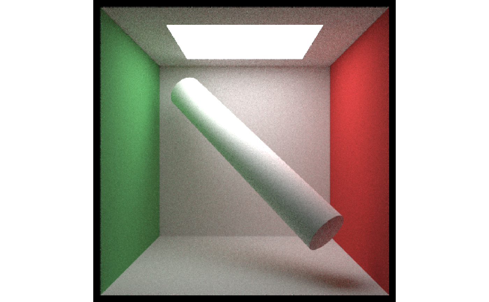
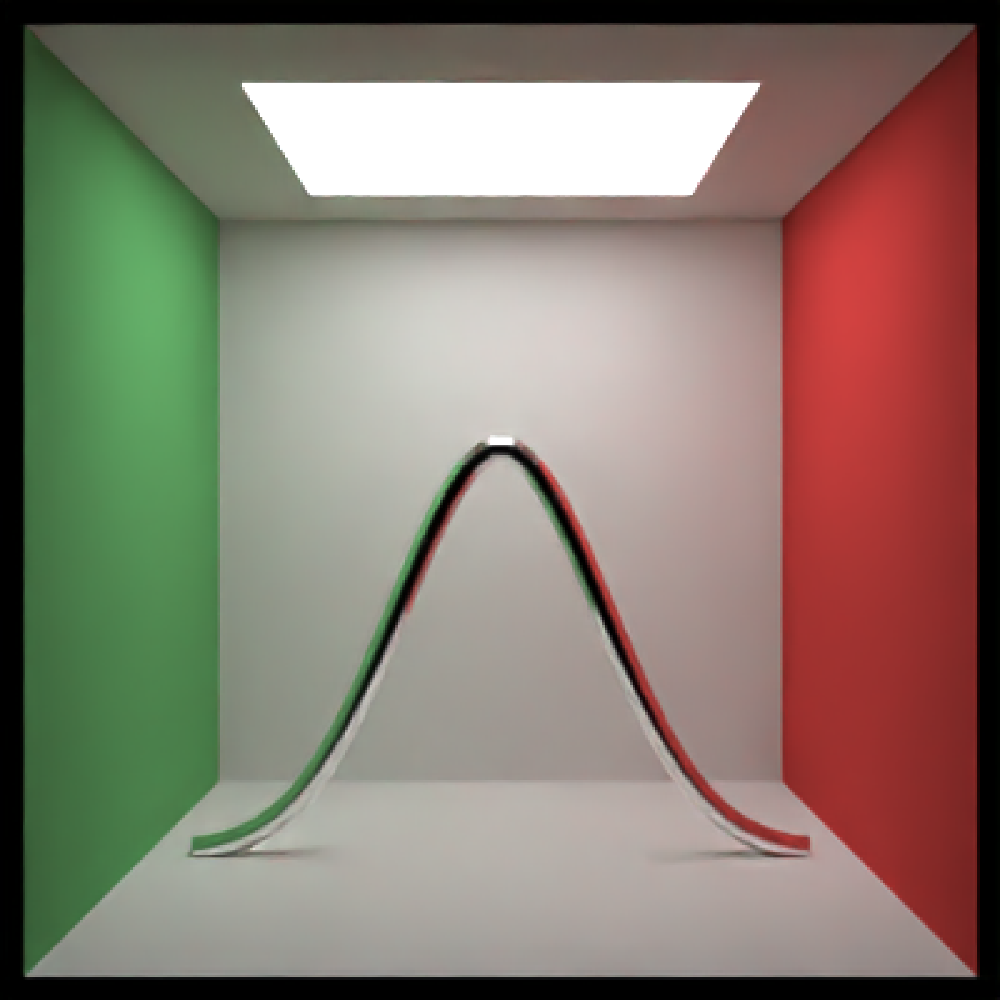
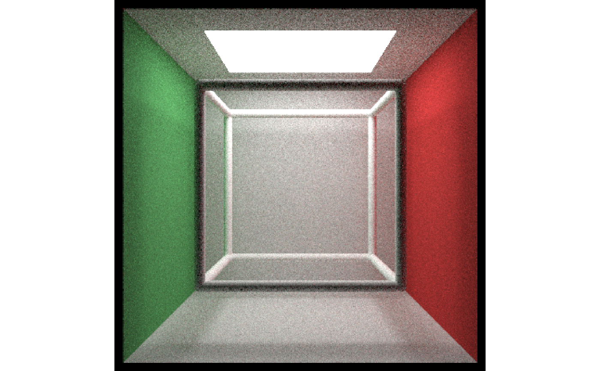
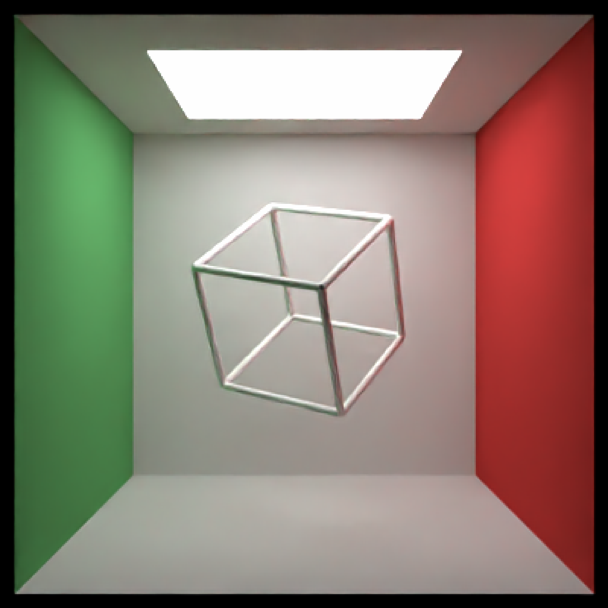

Similar to the cylinder object, but specified by start and end points.
Default `c(0, -1, 0)`. Start point of the cylinder segment, specifing `x`, `y`, `z`.
Default `c(0, 1, 0)`. End point of the cylinder segment, specifing `x`, `y`, `z`.
Default `1`. Radius of the segment.
Default `0`. Minimum angle around the segment.
Default `360`. Maximum angle around the segment.
Default `TRUE`. If orientation specified via `direction`, setting this argument to `FALSE` will make `start` specify the bottom of the segment, instead of the middle.
Default `NA`. Alternative to `start` and `end`, specify the direction (via a length-3 vector) of the segment. Segment will be centered at `start`, and the length will be determined by the magnitude of the direction vector.
Default diffuse.The material, called from one of the material
functions diffuse, metal, or dielectric.
Default `TRUE`. Whether to add caps to the segment. Turned off when using the `light()` material.
Default `FALSE`. Whether to flip the normals.
Default `c(1, 1, 1)`. Scale transformation in the x, y, and z directions. If this is a single value, number, the object will be scaled uniformly. Notes: this will change the stated start/end position of the segment. Emissive objects may not currently function correctly when scaled.
Single row of a tibble describing the segment in the scene.
#Generate a segment in the cornell box.
if(rayrender:::run_documentation()) {
generate_cornell() %>%
add_object(segment(start = c(100, 100, 100), end = c(455, 455, 455), radius = 50)) %>%
render_scene(lookfrom = c(278, 278, -800) ,lookat = c(278, 278, 0), fov = 40,
ambient_light = FALSE, samples = 128, parallel = TRUE, clamp_value = 5)
}

# Draw a line graph representing a normal distribution, but with metal:
xvals = seq(-3, 3, length.out = 30)
yvals = dnorm(xvals)
scene_list = list()
for(i in 1:(length(xvals) - 1)) {
scene_list[[i]] = segment(start = c(555/2 + xvals[i] * 80, yvals[i] * 800, 555/2),
end = c(555/2 + xvals[i + 1] * 80, yvals[i + 1] * 800, 555/2),
radius = 10,
material = metal())
}
scene_segments = do.call(rbind,scene_list)
if(rayrender:::run_documentation()) {
generate_cornell() %>%
add_object(scene_segments) %>%
render_scene(lookfrom = c(278, 278, -800) ,lookat = c(278, 278, 0), fov = 40,
ambient_light = FALSE, samples = 128, parallel = TRUE, clamp_value = 5)
}

#Draw the outline of a cube:
cube_outline = segment(start = c(100, 100, 100), end = c(100, 100, 455), radius = 10) %>%
add_object(segment(start = c(100, 100, 100), end = c(100, 455, 100), radius = 10)) %>%
add_object(segment(start = c(100, 100, 100), end = c(455, 100, 100), radius = 10)) %>%
add_object(segment(start = c(100, 100, 455), end = c(100, 455, 455), radius = 10)) %>%
add_object(segment(start = c(100, 100, 455), end = c(455, 100, 455), radius = 10)) %>%
add_object(segment(start = c(100, 455, 455), end = c(100, 455, 100), radius = 10)) %>%
add_object(segment(start = c(100, 455, 455), end = c(455, 455, 455), radius = 10)) %>%
add_object(segment(start = c(455, 455, 100), end = c(455, 100, 100), radius = 10)) %>%
add_object(segment(start = c(455, 455, 100), end = c(455, 455, 455), radius = 10)) %>%
add_object(segment(start = c(455, 100, 100), end = c(455, 100, 455), radius = 10)) %>%
add_object(segment(start = c(455, 100, 455), end = c(455, 455, 455), radius = 10)) %>%
add_object(segment(start = c(100, 455, 100), end = c(455, 455, 100), radius = 10))
if(rayrender:::run_documentation()) {
generate_cornell() %>%
add_object(cube_outline) %>%
render_scene(lookfrom = c(278, 278, -800) ,lookat = c(278, 278, 0), fov = 40,
ambient_light = FALSE, samples = 128, parallel = TRUE, clamp_value = 5)
}

#Shrink and rotate the cube
if(rayrender:::run_documentation()) {
generate_cornell() %>%
add_object(group_objects(cube_outline, pivot_point = c(555/2, 555/2, 555/2),
angle = c(45,45,45), scale = c(0.5,0.5,0.5))) %>%
render_scene(lookfrom = c(278, 278, -800) ,lookat = c(278, 278, 0), fov = 40,
ambient_light = FALSE, samples = 128, parallel = TRUE, clamp_value = 5)
}
